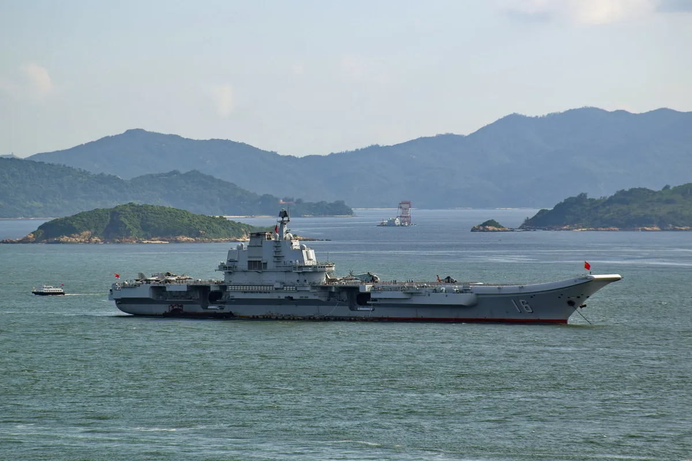
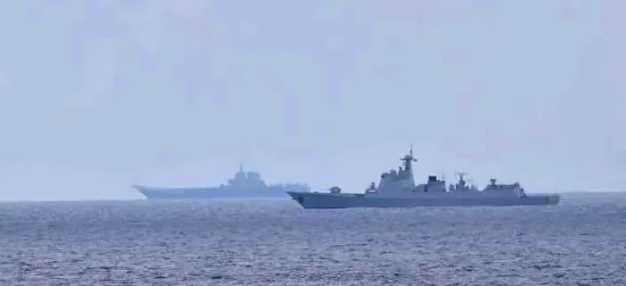
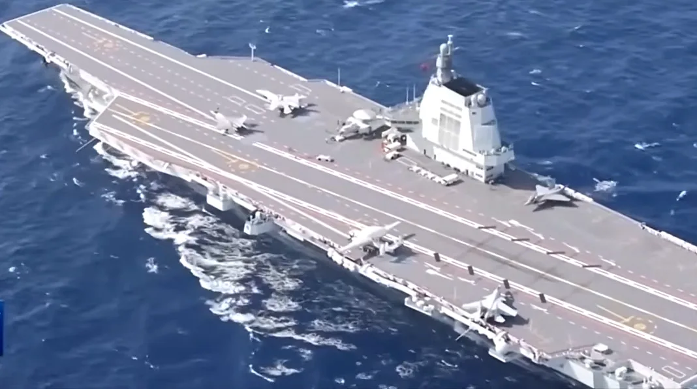

CV-16现役
001 型 · 滑跃起飞
辽宁舰 LIAONING
中国第一艘航空母舰，由未完工的“瓦良格”号船体续建改造，实现从无到有的跨越。
- 6.75万吨 · 满载
- 304米 · 舰长
- 2012年 · 入列
PLAN · 001—003中国航母公开档案
三艘航空母舰，三代技术跨越。以公开资料为坐标，走进中国航母编队的体系与航迹。
01 / FLEET
从续建改造到自主建造，再到电磁弹射。三艘航母，标记出中国海军走向远海的三级台阶。 点击舰卡查看完整档案
001 型 · 滑跃起飞
中国第一艘航空母舰，由未完工的“瓦良格”号船体续建改造，实现从无到有的跨越。
002 型 · 滑跃起飞
首艘完全自主设计建造的国产航母，突破船体结构与动力核心设备的关键技术。
003 型 · 电磁弹射
首艘自主设计建造的电磁弹射型航母，让固定翼预警机与新一代舰载机上舰成为可能。
参数均为公开资料估算值，不同来源存在差异，仅供科普参考。
02 / FORMATION
航母从不孤舰作战。切换四种典型编成，点击舰艇查看角色档案；也可以进入三维沙盘观察阵位。 拖动舰艇调整阵位 · 金色手柄旋转航向
典型编成仅用于展示航母编队的体系构成，舰名与阵位为公开资料基础上的艺术化组合，不代表真实任务编组。
REAL REFERENCES
三维沙盘依据公开照片中的舰体比例、舰岛位置、甲板标线与涂装进行低多边形重建；照片用于参考与出处展示。



图片来源：Wikimedia Commons · 查看完整出处与许可。模型为非官方艺术重建，不直接使用照片作为舰体 UV 贴图；甲板标线、涂装与比例参考上述公开影像。
03 / AIR WING
航母的拳头在甲板之上。战斗机、预警机与直升机，把海上平台延伸为一座移动机场。 机型构成为公开资料推测
J-15 · CARRIER FIGHTER
重型舰载战斗机，承担制空、反舰与对陆打击任务，是辽宁舰、山东舰的主力机型。
J-35 · STEALTH FIGHTER
新一代隐身舰载战斗机，被认为将搭配福建舰的电磁弹射系统，提升编队突防能力。
KJ-600 · AEW&C
固定翼舰载预警机，为编队提供远程空情探测与指挥引导，是弹射型航母的关键配套。
Z-20 · NAVAL HELICOPTER
承担反潜、搜救、垂直补给与特战投送等任务，补齐编队近程反潜与勤务能力。
“从滑跃到弹射，从四代到五代，从单舰到体系。”
04 / TIMELINE
十余年，从一艘改装航母到三舰同框。每一步，都是工业能力与体系能力的叠加。
中国第一艘航空母舰正式服役，舷号 16，实现航母从无到有。
首艘完全自主设计建造的国产航母交付，舷号 17，双航母格局形成。
首艘电磁弹射型航母在上海下水命名，舷号 18，跳过蒸汽弹射阶段。
福建舰驶离码头开展首次航行试验，动力、电力与电磁弹射系统接受检验。
福建舰在海南三亚正式入列，中国海军进入三航母时代。
航母、驱逐舰、护卫舰、补给舰与舰载机共同构成远海作战体系，训练与部署走向常态化。